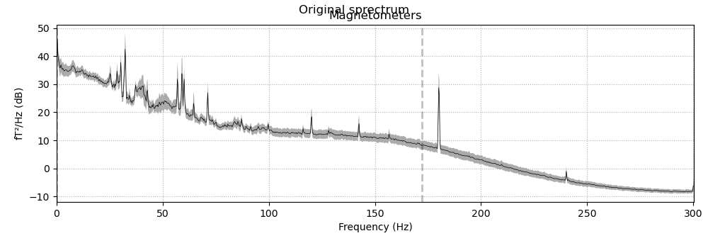
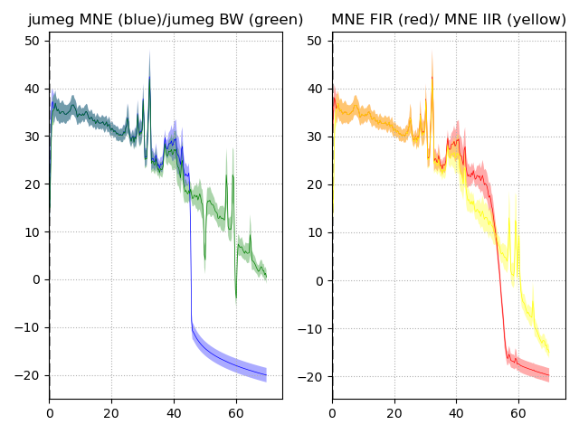

Note
Go to the end to download the full example code
Filtering in jumeg.¶
Comparison of the various filters available for use in mne/jumeg.
- 
- 
Opening raw data file /Users/praveen.sripad/nanna_data/mne_data/MNE-sample-data/MEG/sample/sample_audvis_raw.fif...
Read a total of 3 projection items:
PCA-v1 (1 x 102) idle
PCA-v2 (1 x 102) idle
PCA-v3 (1 x 102) idle
Range : 25800 ... 192599 = 42.956 ... 320.670 secs
Ready.
Reading 0 ... 166799 = 0.000 ... 277.714 secs...
Sampling frequency is 600.614990
NOTE: plot_psd() is a legacy function. New code should use .compute_psd().plot().
NOTE: plot_psd() is a legacy function. New code should use .compute_psd().plot().
Effective window size : 3.410 (s)
[Parallel(n_jobs=4)]: Using backend LokyBackend with 4 concurrent workers.
[Parallel(n_jobs=4)]: Done 2 out of 4 | elapsed: 0.1s remaining: 0.1s
[Parallel(n_jobs=4)]: Done 4 out of 4 | elapsed: 0.1s remaining: 0.0s
[Parallel(n_jobs=4)]: Done 4 out of 4 | elapsed: 0.1s finished
NOTE: plot_psd() is a legacy function. New code should use .compute_psd().plot().
Effective window size : 3.410 (s)
[Parallel(n_jobs=4)]: Using backend LokyBackend with 4 concurrent workers.
[Parallel(n_jobs=4)]: Done 2 out of 4 | elapsed: 0.1s remaining: 0.1s
[Parallel(n_jobs=4)]: Done 4 out of 4 | elapsed: 0.1s remaining: 0.0s
[Parallel(n_jobs=4)]: Done 4 out of 4 | elapsed: 0.1s finished
NOTE: plot_psd() is a legacy function. New code should use .compute_psd().plot().
NOTE: plot_psd() is a legacy function. New code should use .compute_psd().plot().
import os.path as op
import numpy as np
import matplotlib.pyplot as plt
import mne
from mne.datasets import sample
from jumeg.filter import jumeg_filter
data_path = sample.data_path()
raw_fname = op.join(data_path, 'MEG/sample/sample_audvis_raw.fif')
# load the raw data
raw = mne.io.Raw(raw_fname, preload=True)
picks = mne.pick_types(raw.info, meg='mag', exclude='bads')
print('Sampling frequency is %f' % raw.info['sfreq'])
# plot the raw psd
fig = raw.plot_psd(tmin=0.0, tmax=160., fmin=0, fmax=np.inf,
picks=picks, ax=None, color='black', area_mode='std',
area_alpha=0.33, n_overlap=0, dB=True, average=True,
show=False, n_jobs=4, line_alpha=None,
spatial_colors=None, xscale='linear', verbose='ERROR');
fig.suptitle('Original sprectrum')
l_freq, h_freq = 1., 45.
# apply FIR filter
fir_filt = raw.copy().filter(l_freq, h_freq, picks=picks, filter_length='auto',
l_trans_bandwidth='auto', h_trans_bandwidth='auto',
n_jobs=4, method='fir', iir_params=None, phase='zero',
fir_window='hamming', verbose='ERROR')
# apply IIR filter
filter_type = 'butter'
filt_method = 'fft'
iir_params={'ftype': filter_type, 'order': 4}
# apply IIR filter
iir_filt = raw.copy().filter(l_freq, h_freq, picks=picks, filter_length='auto',
l_trans_bandwidth='auto', h_trans_bandwidth='auto',
n_jobs=4, method='iir', iir_params=iir_params, phase='zero',
fir_window='hamming', verbose='ERROR')
# apply the jumeg filter using mne
filt_ju_mne = jumeg_filter(filter_method='mne', filter_type='bp', fcut1=l_freq, fcut2=h_freq,
remove_dcoffset=True, sampling_frequency=raw.info['sfreq'],
filter_window='hamming', notch=np.array([50., 60.]),
notch_width=1.0, order=4, njobs=4,
mne_filter_method='fft',mne_filter_length='10s',
trans_bandwith=0.5)
ju_mne_filt = raw.copy() # make a copy
ju_mne_filt._data = filt_ju_mne.apply_filter(ju_mne_filt._data, picks)
# apply the jumeg filter using bw
filt_ju_bw = jumeg_filter(filter_method='bw', filter_type='bp', fcut1=l_freq, fcut2=h_freq,
remove_dcoffset=True, sampling_frequency=raw.info['sfreq'],
filter_window='hamming', notch=np.array([50., 60.]),
notch_width=1.0, order=4, njobs=4,
mne_filter_method='fft',mne_filter_length='10s',
trans_bandwith=0.5)
filt_ju_bw.verbose = False
ju_bw_filt = raw.copy() # make a copy
filt_ju_bw.apply_filter(ju_bw_filt._data, picks)
fig, (ax1, ax2) = plt.subplots(1, 2)
# plot the jumeg MNE and jumeg Butterworth filtered raw psds
ju_mne_filt.plot_psd(tmin=0.0, tmax=160., fmin=0, fmax=70., n_fft=None,
picks=picks, ax=ax1, color='blue', area_mode='std',
area_alpha=0.33, n_overlap=0, dB=True, average=True,
show=False, n_jobs=4, line_alpha=None,
spatial_colors=None, xscale='linear', verbose=None);
ju_bw_filt.plot_psd(tmin=0.0, tmax=160., fmin=0, fmax=70., n_fft=None,
picks=picks, ax=ax1, color='green', area_mode='std',
area_alpha=0.33, n_overlap=0, dB=True, average=True,
show=False, n_jobs=4, line_alpha=None,
spatial_colors=None, xscale='linear', verbose=None);
ax1.set_xlim(0., 75.);
ax1.set_title('jumeg MNE (blue)/jumeg BW (green)');
# plot the MNE FIR and IIR filterered raw psds
fir_filt.plot_psd(tmin=0.0, tmax=160., fmin=0, fmax=70., n_fft=None,
picks=picks, ax=ax2, color='red', area_mode='std',
area_alpha=0.33, n_overlap=0, dB=True, average=True,
show=False, n_jobs=4, line_alpha=None,
spatial_colors=None, xscale='linear', verbose='ERROR');
iir_filt.plot_psd(tmin=0.0, tmax=160., fmin=0., fmax=70., n_fft=None,
picks=picks, ax=ax2, color='yellow', area_mode='std',
area_alpha=0.33, n_overlap=0, dB=True, average=True,
show=False, n_jobs=4, line_alpha=None,
spatial_colors=None, xscale='linear', verbose='ERROR');
ax2.set_xlim(0., 75.);
ax2.set_title('MNE FIR (red)/ MNE IIR (yellow)');
fig.tight_layout()
plt.show()
# Recommendation: Presently, it is best to use the MNE FIR filter for our
# filtering requirements. The jumeg filter module (which wraps around mne
# filter) may be used when the MNE band_pass_filter needs to be combined with
# the notch_filter. In cases where the notch frequencies are removed using the
# noise reducer, the mne FIR filter can be directly used.
Total running time of the script: ( 0 minutes 3.874 seconds)